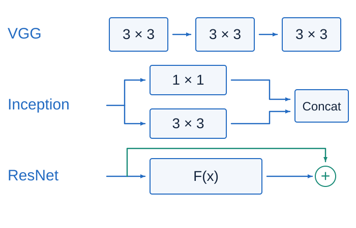
CNN Architecture
From layers to design decisions
- Build a reliable blockShapes, cost, normalization, and activation.
- Grow context and combine pathsVGG, global pooling, and Inception.
- Make depth trainableResidual learning, projection, and implementation.
- Design under constraintsEfficient operators, transfer, and model evaluation.
Before we add another layer
Input:
- What is the output shape?
- How many weights, excluding bias?
- Does halving the resolution halve the weight count?
Convolution: weights, computation, output
Weights
Computation
Output tensor
Dense convolution, no bias; MACs per image. 1 MAC ≈ 2 FLOPs.
A network is a sequence of stages
Stem
→Stages
→Pooling
→Classifier
Inside a stage
Refine features at a fixed spatial resolution.
Between stages
Reduce resolution; often increase channels.
Normalize features within a channel
Common block: convolution → BatchNorm → ReLU.
Architecture needs a training contract
- Nonlinearity: ReLU between linear operators changes the function class.
- Initialization: for a ReLU layer, use variance about
2/\mathrm{fan\_in} . - Regularization: inverted dropout scales retained units during training.
At evaluation: disable dropout and use the intended normalization statistics.
Three ways to compose features
Sequential
Refine features in sequence.
Parallel
Concatenate channels.
Residual
Add aligned features.
Every merge comes with a tensor-shape contract.
VGG: repeat a small, regular block
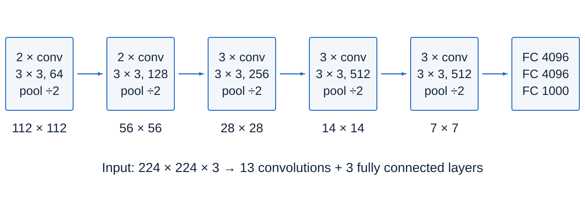
All convolutions: 3 × 3, stride 1, padding 1. Pooling: 2 × 2, stride 2.
Repeated local filters grow context
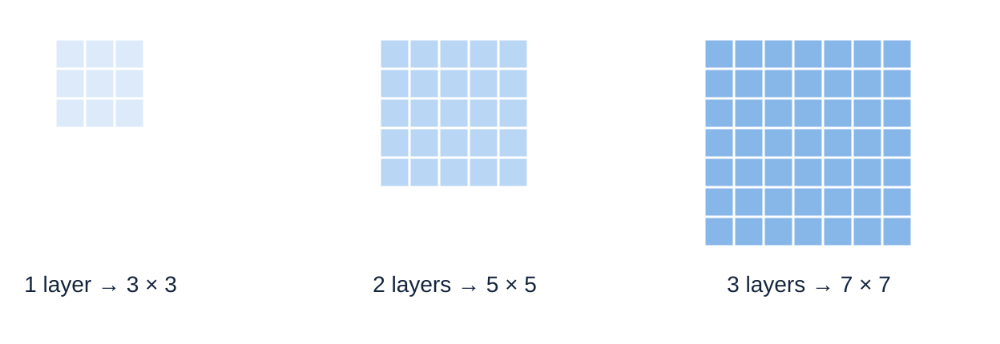
Same context, different computation
Stride 1, constant spatial size, C channels throughout
One large filter
A stack of local filters
Both see a 7 × 7 region; their functions can differ.
Trace a change in resolution
| Layer | Output H × W × C | Receptive field r; jump j |
|---|---|---|
| Input | 32 × 32 × 64 | 1; 1 |
| 3 × 3 conv, s=1, p=1, C=64 | ? | ? |
| 2 × 2 max pool, s=2 | ? | ? |
| 3 × 3 conv, s=1, p=1, C=128 | ? | ? |
Which operation changes the spacing of sampled input locations?
The classifier can dominate the weights
Flatten + dense
7 × 7 × 512 → 1000
25,088,000 weights
Global average pool + dense
7 × 7 × 512 → 512 → 1000
512,000 weights
A spatial average discards explicit location within each channel.
Combine evidence at different scales
A serial choice
Choose one kernel size at each layer.
A parallel choice
Compute several transformations from the same input.
Match spatial dimensions; add channel counts.
Inception: branches with channel reduction
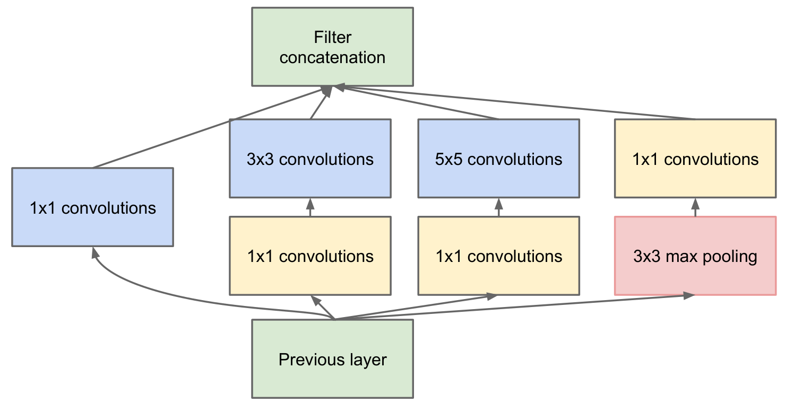
Read bottom → top. The 1 × 1 layers reduce channels before spatial filtering.
A 1 × 1 filter mixes channels
What it changes
The channel basis and width.
What it preserves
The spatial grid at stride 1.
A pointwise layer sees all input channels at one location.
Spend spatial computation at a smaller width
Spatial size stays 28 × 28; output width stays 128 channels.
Direct spatial filtering
221,184 weights
173.408 M MACs
Compress, then filter
129,024 weights
101.155 M MACs
41.7% fewer MACs for this branch, at the same spatial size.
Can these branch outputs be merged?
Repair one setting. State the concatenated output shape.
Make depth trainable
If a deeper model can represent a shallow solution, why might it fit the training set worse?
Training error diagnoses the failure
CIFAR-10 · plain 20- and 56-layer networks · lower error is better
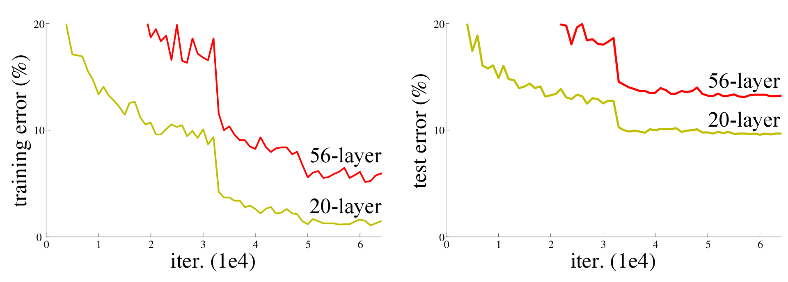
Higher training error points to an optimization difficulty.
Learn a correction to the input
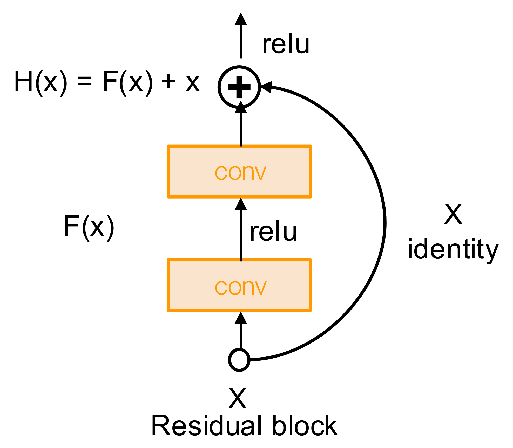
The branch learns a correction.
The shortcut contributes an identity term
For a scalar F(x) = ax: the plain derivative is a; the residual derivative is 1 + a.
The final ReLU also contributes its activation mask.
A shortcut must match the residual shape
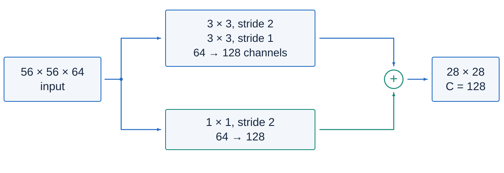
Read a complete residual network
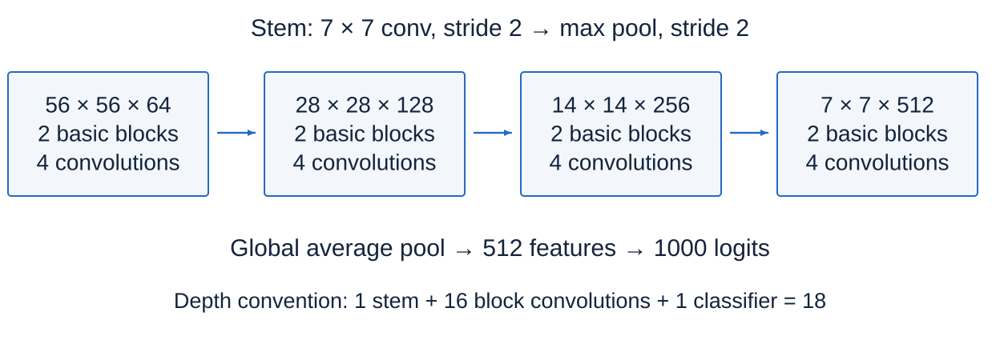
A residual bottleneck controls width
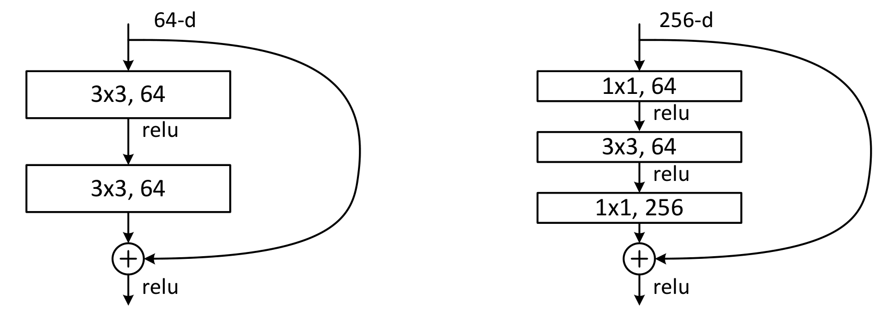
Left: 64-channel basic block. Right: 256-channel bottleneck.
Implement the block contract
# __init__: input convention is N, C, H, W
self.f = nn.Sequential(
nn.Conv2d(cin, cout, 3, stride, 1, bias=False),
nn.BatchNorm2d(cout), nn.ReLU(),
nn.Conv2d(cout, cout, 3, 1, 1, bias=False),
nn.BatchNorm2d(cout))
self.skip = nn.Identity()
if cin != cout or stride != 1:
self.skip = nn.Sequential(
nn.Conv2d(cin, cout, 1, stride, bias=False),
nn.BatchNorm2d(cout))
# forward(x):
return torch.relu(self.f(x) + self.skip(x))The shortcut test must check both channel count and stride.
Find the broken residual transition
# x: (8, 64, 56, 56), in NCHW f = nn.Conv2d(64, 128, 3, stride=2, padding=1) skip = nn.Identity() y = f(x) + skip(x)
- Write the shape of each summand.
- Repair the shortcut.
- Would concatenation preserve the intended block?
Addition and concatenation encode different choices
Two inputs, each H × W × C; spatial dimensions match.
Add corresponding entries
Next 3 × 3 conv to C channels:
Concatenate channels
Next 3 × 3 conv to C channels:
The merge changes the computation of the next layer.
Design within a budget
Which costs can we reduce without discarding the evidence our task needs?
Factor spatial filtering and channel mixing
Depthwise: filter each channel
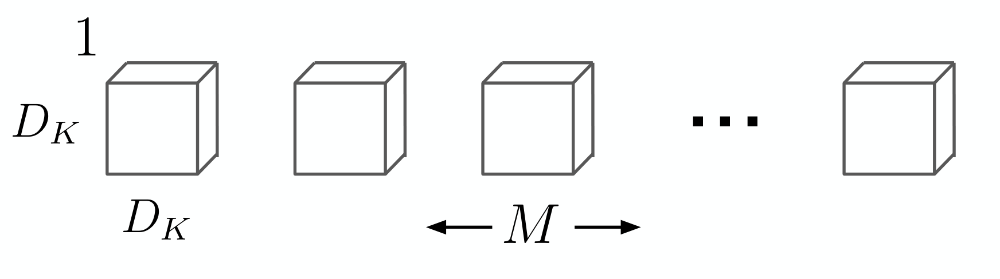
Pointwise: mix channels
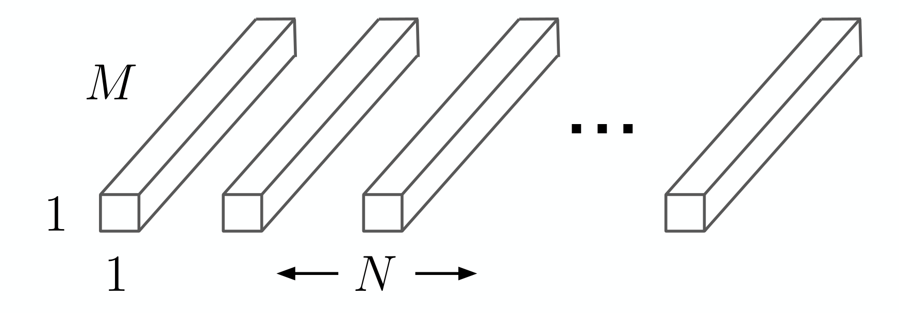
Source notation:
Explore width and spatial cost
k=3; M=64α; N=128α.
No bias; one image.
Dense
Separable
Fewer MACs do not guarantee lower latency
- Compute: count operations with a stated convention.
- Memory: include activations, data movement, and precision.
- Latency: measure the target device at the intended batch size.
Compare accuracy and resource use under the same evaluation protocol.
Choose what to reuse and what to learn
Pretrained
backbone
→backbone
Global
pooling
→pooling
New K-class
head
head
- Start with a frozen-feature baseline.
- Use validation evidence to decide what to fine-tune.
- Retain the pretrained input normalization contract.
Freezing weights does not automatically freeze BatchNorm statistics.
An architecture claim needs a fair experiment
Measure: accuracy, MACs, memory, latency, and variation.
Use validation for selection; reserve the test set for the final report.
Carry the design principles forward
- Context: stacked small filters expand what a feature can see.
- Composition: concatenate branches; add residual corrections.
- Optimization: shortcuts, normalization, and training choices interact.
- Efficiency: compression and factorization change cost and capacity.
- Evidence: choose using validation and measurements on the target system.
Exit check
Two stride-1 3 × 3 layers: what receptive-field extent?
5 × 5, with no earlier downsampling.
When must an identity shortcut be replaced?
When shape changes; align spatial size and channels.
Does half the MAC count prove half the latency?
No. Measure on the target device with a fixed protocol.
Reading and further study
- CS231n 2026, Lecture 6, pp. 33–58
VGG and residual networks; training and transfer elsewhere in the lecture.
- VGG, §2 · ResNet, §3 and Table 1
Small filters, residual mappings, and full-network specifications.
- Going Deeper with Convolutions, §4
Inception branches and channel reduction.
- Supplementary: MobileNets, §3 · PyTorch ResNet18
Efficient operators and an implementation reference.